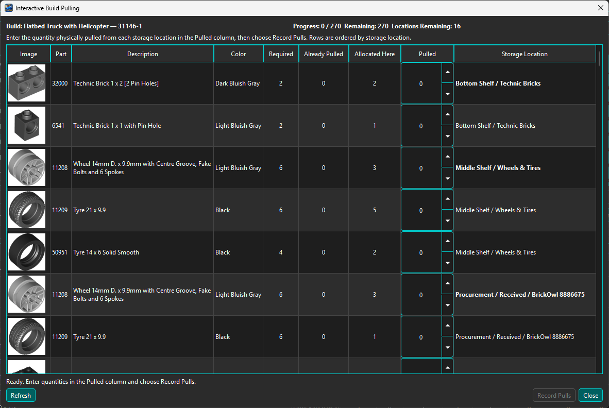
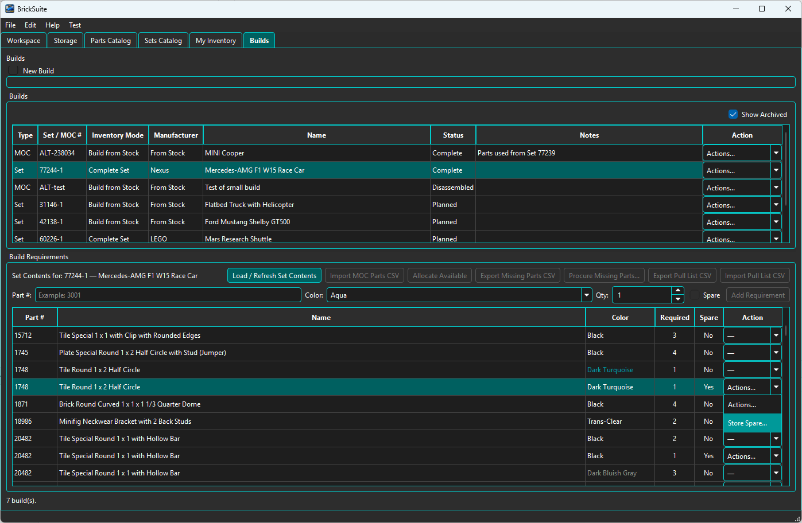
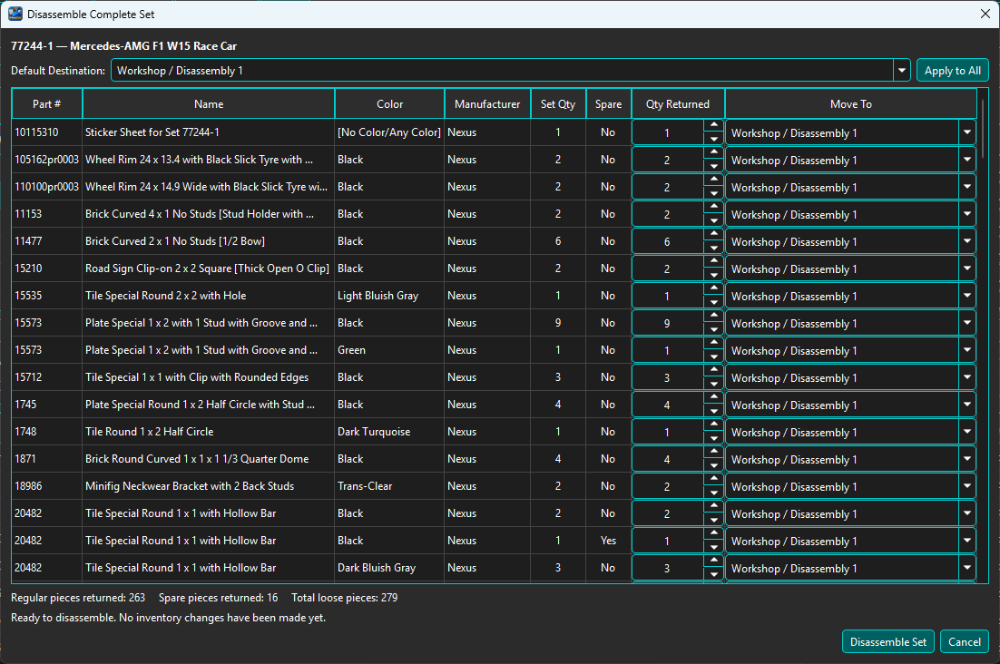

A Build is a planned or assembled project with persistent requirements, allocations, pulls, and lifecycle history.

Stock means the model is assembled from loose inventory through allocation and pulling. Complete Set represents an intact physical Set and does not consume loose stock through that pipeline.
For a Set or Minifig, first acquire its composition in Catalog Details and choose Create Build From Stock.... BrickSuite creates the Build and copies the current required non-spare Part/Color rows. This is a snapshot: later catalog imports do not rewrite the Build. For a MOC, use New Build and add or import requirements.
Select a Build and review each required Part, Color, Quantity, allocated quantity, pulled quantity, and shortage. Every row has its own logical requirement identity, even if another row happens to use the same Part and Color. The overview above shows the current requirement and allocation columns.
Edit a requirement to configure a deliberate replacement Part and/or Color. Allocation and pulling then use the effective substitute, while the original requirement remains the model's logical requirement. Clear or change the substitution only through the requirement workflow; BrickSuite does not infer substitutions from similar parts.

Open Missing Parts for the unfulfilled quantity after allocation. Review shortages and export the supported purchasing/wanted-list data. Procurement output does not itself receive inventory; acquired pieces still enter through Add Part or the appropriate receiving/import preview.

Choose Pull Build... when you are physically collecting pieces. Work through the displayed Storage/inventory rows and record the quantity actually pulled. Pulled quantity cannot exceed the linked allocation. Partial pulls remain visible so the session can continue later.
Pulling reduces loose availability through the Build workflow while retaining the exact requirement, source inventory, Storage, and Manufacturer provenance.



Completion requires the Build's required quantities to be satisfied through its applicable workflow. Review outstanding allocation or pulled quantities before completing. Cancelling a Build releases supported outstanding commitments without rewriting its historical requirements or movements.
Catalog spare rows are not required Build requirements for Create Build From Stock. Complete Set workflows can retain spare information and explicitly release applicable spare pieces to My Inventory. Optional catalog spares are not part of the Collection meaning of Complete.

For a supported completed Build, choose Disassemble, select valid destination Storage, review the actual returned quantities, and confirm. BrickSuite returns constituent pieces through recorded inventory movements and preserves Manufacturer provenance. A linked Collection item is synchronized with the disassembled Build lifecycle.

An eligible completed Set, Minifig, or MOC Build can use Add to Collection.... Afterward, View Collection Item opens its physical-instance record. A historical Set Build without set_catalog_id may use Link to Sets Catalog... for a deliberate exact link; BrickSuite never treats the displayed Set number as authoritative identity automatically.
Allocate Available | Missing Parts | MOCs | My Collection | Lost / Found